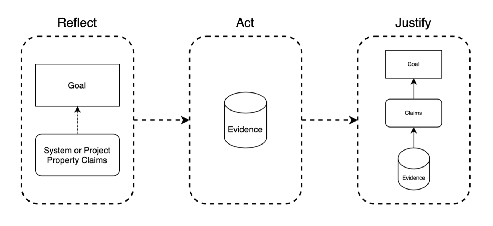

Goals, Properties, and Evidence¶
In the previous section, we looked at the reflect, act, and justify procedure, which was used to help develop and draw together the constitutive elements of an assurance case. To summarise, reflect-act-justify presents a simple illustration of the above process with reference to the three core elements.

But how do you know which goals are relevant for specific projects? How do you use these goals to identify salient properties? And, how do you evaluate and determine if you have sufficient evidence to support your claims and overall case?
By now, you will probably find it unsurprising to hear that a reflective, inclusive, and socially embedded process of stakeholder engagement is key. Consider again the original definition of responsible research and innovation presented in Chapter 2:
“Responsible Research and Innovation is a transparent, interactive process by which societal actors and innovators become mutually responsive to each other with a view on the (ethical) acceptability, sustainability and societal desirability of the innovation process and its marketable products (in order to allow a proper embedding of scientific and technological advances in our society).”[@vonschomberg2011]
But even though stakeholder engagement is necessary, a project team still need a springboard to help facilitate communication and deliberation with stakeholders. That is, they need a starting point, grounded in an informed understanding of the potential harms that can arise from the misuse of data science and AI. This is why we introduced the SAFE-D principles in Chapter 2. These principles were not plucked from thin air. They are rooted in and interconnected with wide-ranging and multi-disciplinary methods of enquiry that explore such social and ethical harms and benefits (e.g., moral philosophy, human rights law, and science and technology studies), and are also enhanced through diverse modes of knowledge production (e.g., citizen science, investigative journalism, quality assurance, and activism).
As such, the SAFE-D principles represent significant normative goals and valuable starting points for a process of reflection, action and justification. While it is not possible to show how they can be operationalised in every possible data science or AI project, it is possible to expand upon the goals by discussing some of their core attributes.
Sustainability¶
| Core Attribute | Description |
|---|---|
| Safety | Safety is core to sustainability but goes beyond the mere operational safety of the system. It also includes an understanding of the long-term use context and impact of the system, and the resources needed to ensure the system continues to operate safely over time within its environment (i.e. is sustainable). For instance, safety may depend upon sufficient change monitoring processes that establish whether there has been any substantive drift in the underlying data distributions or social operating environment. Or, it could also involve engaging and involving users and stakeholders in the design and assessment of AI systems that could impact their human rights and fundamental freedoms. |
| Security | Security encompasses the protection of several operational dimensions of an AI system when confronted with possible adversarial attack. A secure system is capable of maintaining the integrity of its constitutive information. This includes protecting its architecture from the unauthorised modification or damage of any of its component parts. A secure system also remains continuously functional and accessible to its authorised users and keeps confidential and private information secure even under hostile or adversarial conditions. |
| Robustness | The objective of robustness can be thought of as the goal that an AI system functions reliably and accurately under harsh or uncertain conditions. These conditions may include adversarial intervention, implementer error, or skewed goal-execution by an automated learner (in reinforcement learning applications). The measure of robustness is, therefore, the strength of a system’s functional integrity and the soundness of its operation in response to difficult conditions, adversarial attacks, perturbations, data poisoning, or undesirable reinforcement learning behaviour. |
| Reliability | The objective of reliability is that an AI system behaves exactly as its designers intended and anticipated. A reliable system adheres to the specifications it was programmed to carry out. Reliability is therefore a measure of consistency and can establish confidence in the safety of a system based upon the dependability with which it conforms to its intended functionality. |
| Accuracy and Performance | The accuracy of a model is the proportion of examples for which it generates a correct output. This performance measure is also sometimes characterised conversely as an error rate or the fraction of cases for which the model produces an incorrect output. Specifying a reasonable performance level for the system may also require refining or exchanging the measure of accuracy. For instance, if certain errors are more significant or costly than others, a metric for total cost can be integrated into the model so that the cost of one class of errors can be weighed against that of another. |
Accountability¶
| Core Attribute | Description |
|---|---|
| Traceability | Traceability refers to the process by which all stages of the data lifecycle from collection to deployment to system updating or deprovisioning are documented in a way that is accessible and easily understood. This may include not only the parties within the organisation involved but also the actions taken at each stage that may impact the individuals who use the system. |
| Answerability | Answerability depends upon a human chain of responsibility. Answerability responds to the question of who is accountable for an automation supported outcome. |
| Auditability | Whereas the property of answerability responds to the question of who is accountable for an automation supported outcome, the notion of auditability answers the question of how the designers and implementers of AI systems are to be held accountable. This aspect of accountability has to do with demonstrating and evidencing both the responsibility of design and use practices and the justifiability of outcomes. |
| Clear Data Provenance and Lineage | Clear provenance and data lineage consists of records that are accessible and simultaneously detail how data was collected and how it has been used and altered throughout the stages of pre-processing, modelling, training, testing, and deploying. |
| Accessibility | Accessibility involves ensuring that information about the processes that took place to design, develop, and deploy an AI system are easily accessible by individuals. This not only refers to suitable means of explanation (clear, understandable, and accessible language) but also the mediums for delivery. |
| Reproducibility | Related to and dependant on the above four properties, reproducibility refers to the ability for others to reproduce the steps you have taken throughout your project to achieve the desired outcomes and where necessary to replicate the same outcomes by following the same procedure. |
Fairness¶
| Core Attribute | Description |
|---|---|
| Bias Mitigation | It is not possible to eliminate bias entirely. However, effective bias mitigation processes can minimise the unwanted and undesirable impact of systematic deviations, distortions, or disparate outcomes that arise to a project governance problem, interfering factor, or from insufficient reflection on historical social or structural discrimination. |
| Diversity and Inclusiveness | A significant component of fairness aware design is ensuring the inclusion of diverse voices and opinions in the design and development process through the participation of a more representative range of stakeholders. This includes considering whether values of civic participation, inclusion, and diversity been adequately considered in articulating the purpose and setting the goals of the project. Consulting with internal organisational stakeholders is also necessary to strengthen the openness, inclusiveness, and diversity of the project. |
| Non-Discrimination | A system or model should not create or contribute to circumstances whereby members of protected groups are treated differently or less favourably than other groups because of their respective protected characteristic. |
| Equality | the outcome or impact of a system should either maintain or promote a state of affairs in which every individual has equal rights and liberties, and equal access or opportunities to whatever good or service the AI system brings about. |
Explainability¶
| Core Attribute | Description |
|---|---|
| Interpretability | Interpretability consists of the ability to know how and why a model performed the way it did in a specific context and, therefore, to understand the rationale behind its decision or behaviour. |
| Responsible Model Selection | The normal expectations of intelligibility and accessibility that accompany the function of the system, as fulfilled in the sector or domain in which it will operate. This can also necessitate the availability of more interpretable algorithmic models or techniques in cases where the selection of an opaque model poses risks to the physical, psychological, or moral integrity of rights-holders or to their human rights and fundamental freedoms. The availability of the resources and capacity that will be needed to provide responsible, supplementary methods of explanation (e.g. simpler surrogate models, sensitivity analysis, or relative feature important) in cases where an opaque model is deemed appropriate and selected. |
| Accessible Rationale Explanation | The reasons that led to a decision—especially one that is automated—delivered in an accessible and non-technical way. |
| Implementation and User Training | Training users to operate the AI system may include: a) conveying basic knowledge about the nature of machine learning, b) explaining the limitations of the system, c) educating users about the risks of AI-related biases, such as decision-automation bias or automation-distrust bias, and d) encouraging users to view the benefits and risks of deploying these systems in terms of their role in helping humans to come to judgements, rather than replacing that judgement. |
Data Quality, Integrity, Protection and Privacy¶
| Core Attribute | Description |
|---|---|
| Source Integrity and Measurement Accuracy | Effective bias mitigation begins at the very commencement of data extraction and collection processes. Both the sources and instruments of measurement may introduce discriminatory factors into a dataset. When incorporated as inputs in the training data, biased prior human decisions and judgments—such as prejudiced scoring, ranking, interview-data or evaluation—will become the ‘ground truth’ of the model and replicate the bias in the outputs of the system in order to secure discriminatory non-harm, as well as ensuring that the data sample has optimal source integrity. This involves securing or confirming that the data gathering processes involved suitable, reliable, and impartial sources of measurement and sound methods of collection. |
| Timeliness and Recency | If datasets include outdated data then changes in the underlying data distribution may adversely affect the generalisability of the trained model. Provided these distributional drifts reflect changing social relationship or group dynamics, this loss of accuracy with regard to the actual characteristics of the underlying population may introduce bias into an AI system. In preventing discriminatory outcomes, timeliness and recency of all elements of the data that constitute the datasets must be scrutinised. |
| Relevance, Appropriateness, and Domain Knowledge | The understanding and utilisation of the most appropriate sources and types of data are crucial for building a robust and unbiased AI system. Solid domain knowledge of the underlying population distribution and of the predictive or classificatory goal of the project is instrumental for choosing optimally relevant measurement inputs that contribute to the reasonable determination of the defined solution. Domain experts should collaborate closely with the technical team to assist in the determination of the optimally appropriate categories and sources of measurement. |
| Adequacy of Quantity and Quality | This property involves assessing whether the data available is comprehensive enough to address the problem set at hand, as determined by the use case, domain, function, and purpose of the system. Adequate quantity and quality should address sample size, representativeness, and availability of features relevant to problem. |
| Balance and Representativeness | A balanced and representative dataset is one in which the distribution of features that are included, and the number of samples within each class is similar to the underlying distribution that exists in the overall population. |
| Attributable | Data should clearly demonstrate who observed and recorded it, when it was observed and recorded, and who it is about. |
| Consistent, Legible and Accurate | Data should be easy to understand, recorded permanently and original entities should be preserved. Data should be free from errors and conform with the protocol. Consistency includes ensuring data is chronological (e.g., has a date and time stamp that is in the expected sequence). |
| Complete | All recorded data requires an audit trail to show nothing has been deleted or lost. |
| Contemporaneous | Data should be recorded as it was observed, and at the time it was executed. |
| Responsible Data Management | Responsible data management ensures that the team has been trained on how to manage data responsibly and securely, identifying possible risks and threats to the system and assigning roles and responsibilities for how to deal with these risks if they were to occur. Policies on data storage and public dissemination of results should be discussed within the team and with stakeholders, as well as being clearly documented. |
| Data Traceability and Auditability | Any changes or revisions to the dataset (e.g., additions, augmentations, normalisation) that occur after the original collection should be clearly traceable and well-documented to support any auditing. |
| Consent (or legitimate basis) for processing | There must be demonstrable grounds that data processing can be carried out on the basis of the free, specific, informed and unambiguous consent of the data subject or of some other legitimate basis laid down by law. The data subject must be informed of risks that could arise in the absence of appropriate safeguards. Such consent must represent the free expression of an intentional choice, given either by a statement (which can be written, including by electronic means, or oral) or by a clear affirmative action and which clearly indicates in this specific context the acceptance of the proposed processing of personal data. Mere silence, inactivity or pre-validated forms or boxes should not, therefore, constitute consent. No undue influence or pressure (which can be of an economic or other nature) whether direct or indirect, may be exercised on the data subject and consent should not be regarded as freely given where the data subject has no genuine or free choice or is unable to refuse or withdraw consent without prejudice. The data subject has the right to withdraw the consent he or she gave at any time (which is to be distinguished from the separate right to object to processing). |
| Data Security | Each Party shall provide that the controller, and, where applicable the processor, takes appropriate security measures against risks such as accidental or unauthorised access to, destruction, loss, use, modification or disclosure of personal data. Each Party shall provide that the controller notifies, without delay, at least the competent supervisory authority within the meaning of Article 15 of this Convention, of those data breaches which may seriously interfere with the rights and fundamental freedoms of data subjects. |
| Data Minimisation | Personal data being processed is adequate (sufficient to properly fulfil the stated purpose), relevant (has a rational link to that purpose), and limited to what is necessary do not hold more data than needed for that purpose). |
| Transparency | The transparency of AI systems can refer to several features, both of their inner workings and behaviours, as well as the systems and processes that support them. An AI system is transparent when it is possible to determine how it was designed, developed, and deployed. This can include, among other things, a record of the data that were used to train the system, or the parameters of the model that transforms the input (e.g., an image) into an output (e.g, a description of the objects in the image). However, it can also refer to wider processes, such as whether there are legal barriers that prevent individuals from accessing information that may be necessary to understand fully how the system functions (e.g., intellectual property restrictions). |
| Proportionality | delivering a just outcome in ways that are proportionate to the cost, complexity, and resources available. In a similar vein, the term ‘proportionality’ can also be used as an evaluative notion, such as in the case of a data protection principle that states only personal data that are necessary and adequate for the purposes of the task are collected. |
| Purpose Limitation | The purposes for data processing must be outlined and documented from the beginning and made available to all individuals through privacy information. Personal data must adhere to the original purpose unless it is compatible with the original purpose, additional consent is received, or there is an obligation or function set out in law. |
The above goals and corresponding list of attributes may seem daunting. However, they do not represent a checklist that all research and innovation projects must provide documentation for (e.g. an assurance case). Instead, it is best to think of them as deliberative prompts—a reflect-list rather than a checklist. If, in discussion as a team and in conjunction with stakeholders, it is determined that certain attributes are irrelevant to the project for justifiable reasons, then no activities may be necessary. A principle of proportionality can certianly be adopted here as a meta-principle of sorts, helping direct project governance decisions.
But, if a goal and attribute is deemed important, then the next step is to consider what system or project properties need to be established, and what evidence must be gathered and documented, in order to demonstrate that the top-level goal (and corresponding attributes) have been obtained.
Here, unfortunately, we can only provide some illustrative examples that link a goal and attribute with a possible system or property claim, and also suggest where in the project lifecycle such an activity would be undertaken. As these are examples, no evidential artefact is provided.
| Goal & Attribute | Example Property Claim | Project Lifecycle Stage |
|---|---|---|
| Sustainability (Robustness) | The model used in our system has been internally and externally validated. The external validation has been carried out across several varied environments to ensure robustness of the system. | Model Training, Testing and Validation |
| Accountability (Accessibility) | All identified stakeholders were consulted prior to the development of our system to help critically evaluate our project plans and ensure they were intelligible. | Project Planning and Problem Formulation |
| Fairness (Equality) | Persons affected by use of the system have avenues of recourse, ability to contest system outputs and demand human intervention. | System Use & Monitoring |
| Explainability (Responsible Model Selection) | Features were hand-selected in conjunction with domain experts to optimise for both interpretability and predictive power. | Preprocessing & Feature Engineering and Model Selection |
| Data Quality (Timeliness & Recency) | Only data that were collected within the previous 3 months were used to ensure the training data were up-to-date. | Data Extraction or Procurement |
In the next activity, however, we will consider what properties and evidence ought to be included for a hypothetical assurance case for the projects we have been considering.